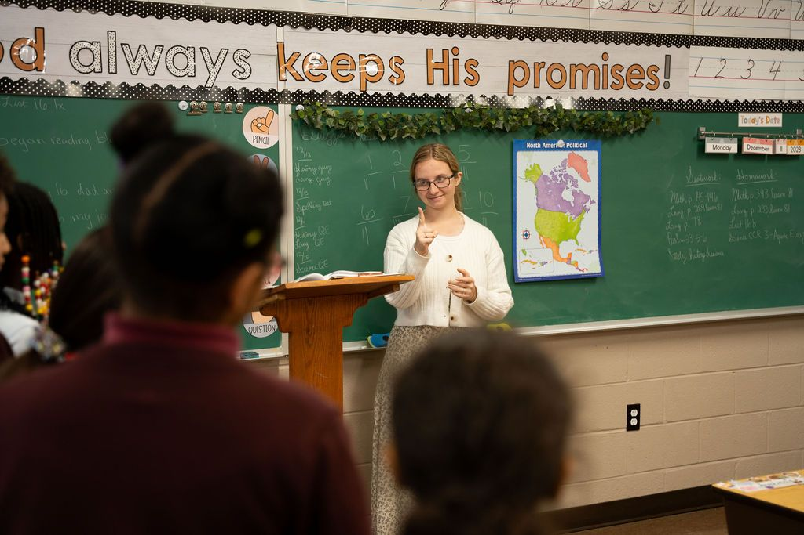

Building a Foundation Today for the Leaders of Tomorrow
A Christ-honoring school with excellent academics, from Stepping Stones Preschool through 12th grade.
Quality, Affordable Christian Education
Independent Baptist Academy and Stepping Stones Preschool are a place where students receive an excellent Christian education. We are dedicated to creating a Christ-honoring environment and excellent academics. We use the Abeka curriculum as the core of our classroom instruction.
Stepping Stones teaches 3 to 4 year olds and is a 12-month program. IBA starts at K5 and goes all the way through 12th grade, and offers an optional summer enrichment program for K5–6th grade students.

Strengthening the Mind and Heart
Our first objective focuses on the heart as we teach our young people “how to live.” The King James Bible is our standard and textbook in this area as we endeavor to build godly character by teaching our young people to be honest, hard-working, trustworthy, and obedient.
Secondly, we focus on the mind as we teach our young people “how to make a living.” We strive for high academic standards and seek to provide the basic education they need using a traditional classroom approach along with Abeka and Bob Jones University curriculum and textbooks.

Summer Enrichment and Summer Camp Programs
A Summer Enrichment Program for ages 5 to 12, plus week-long summer camps in music, science, sports and more, open to everyone.
Learn MoreWhat Our Families and Graduates Say
We have loved this school, faculty, and kids! Our son will be going into his second year here and we couldn’t be more excited to see what he learns and the adventures he goes on. The teachers are loving and the grounds are well kept. Highly recommended!
As a 2014 IBA graduate, I look back fondly to the many memories that I made with my teachers and my fellow classmates. From the classes, to the class trips, to the many sporting events, as well as just taking pride in our school’s spirit, there was always something to which I looked forward. My parents made a great choice when they sent me to IBA.
I graduated from IBA in 2004 and am thankful for IBA’s influence on my life. I knew the teachers and staff cared about me because they took time to make sure I was learning instead of just pushing me through from grade to grade. I thank God for IBA and for the difference the faculty is making in children’s lives every day.
I spent my senior year enjoying new friends, enjoying a disciplined atmosphere of education, and enjoying an inspirational guidance for future planning. Teachers and faculty of IBA, in molding my memories; you were molding my life. I thank the Lord for your sacrifice.
Explore the Possibilities at IBA!
Come see the campus, meet our teachers, and ask your questions.